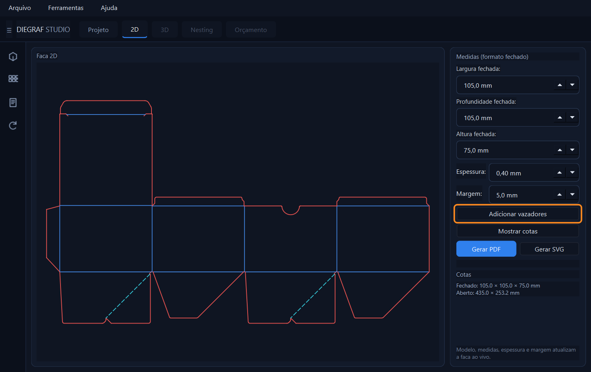
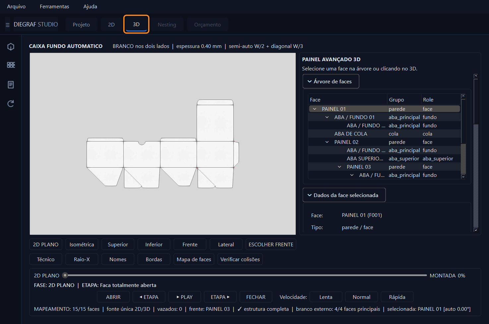
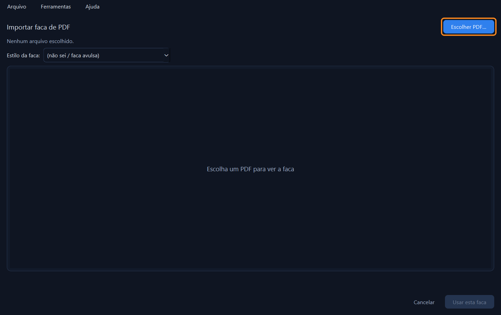
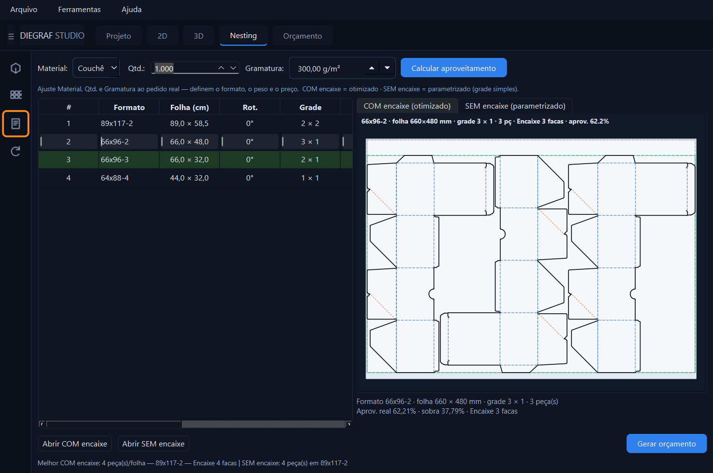
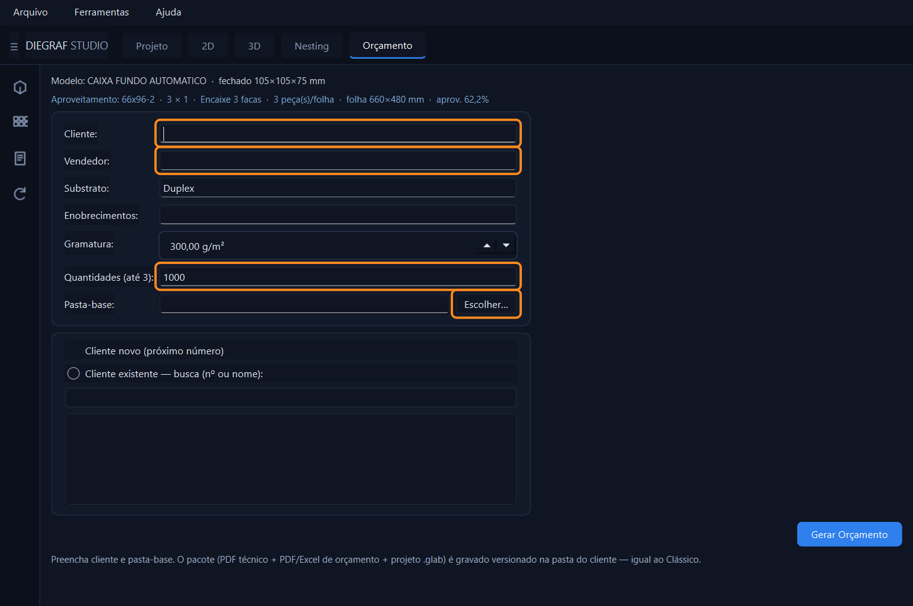
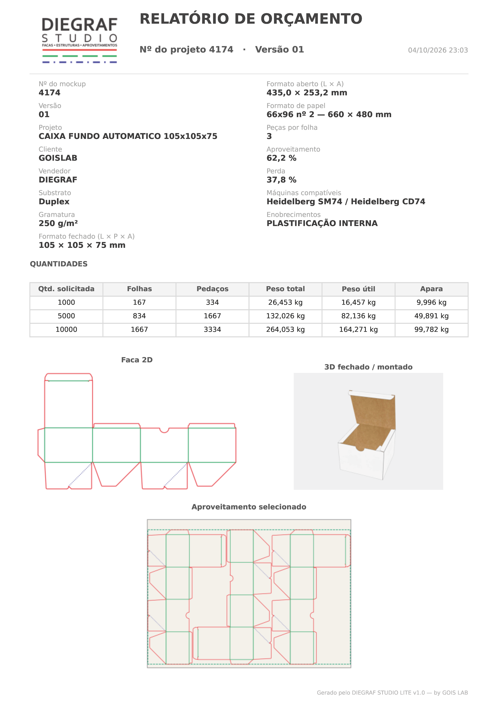
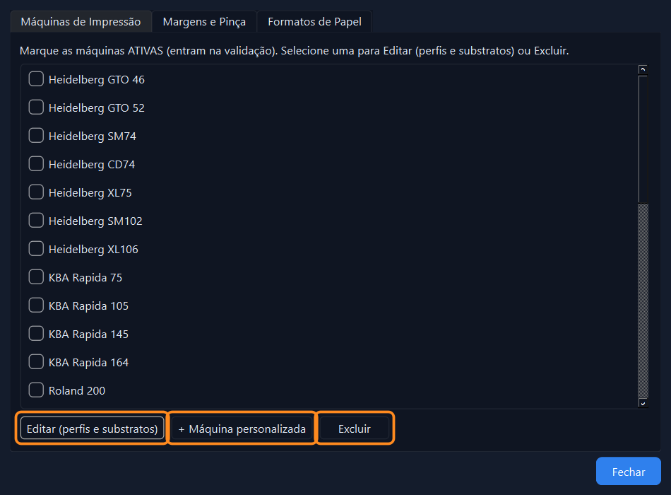

Telas reais do DIEGRAF STUDIO LITE. Clique nas imagens para ampliar.
Escolha um modelo, informe as medidas da embalagem pronta e a faca se ajusta ao vivo, com vazadores e cotas.

A caixa dobrada na tela, com animação de montagem, ângulos por face e verificação de colisões.

Chegou faca de cliente? Importe o PDF, confira o desenho lido e use no lugar de um modelo do programa.

Informe material, quantidade e gramatura. O programa ranqueia os formatos e destaca o de menor consumo de papel.

Cliente, vendedor, substrato, enobrecimentos e até 3 quantidades. Um clique gera o PDF técnico e o Excel.

O documento que vai para o cliente, gerado pelo programa: dados do pedido, quantidades, pesos, faca, 3D e aproveitamento.

Cadastre suas máquinas de impressão, margens, pinça e formatos de papel. O aproveitamento passa a usar a sua realidade.
